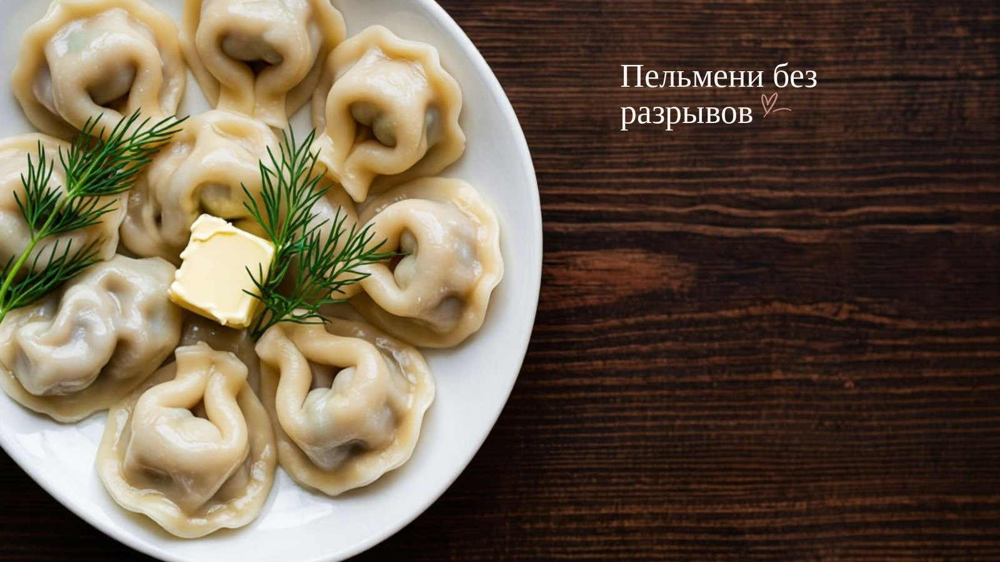
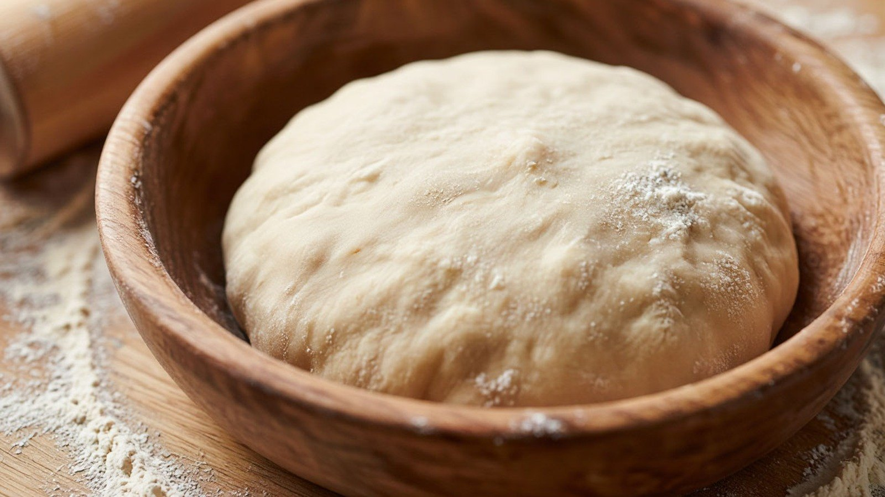
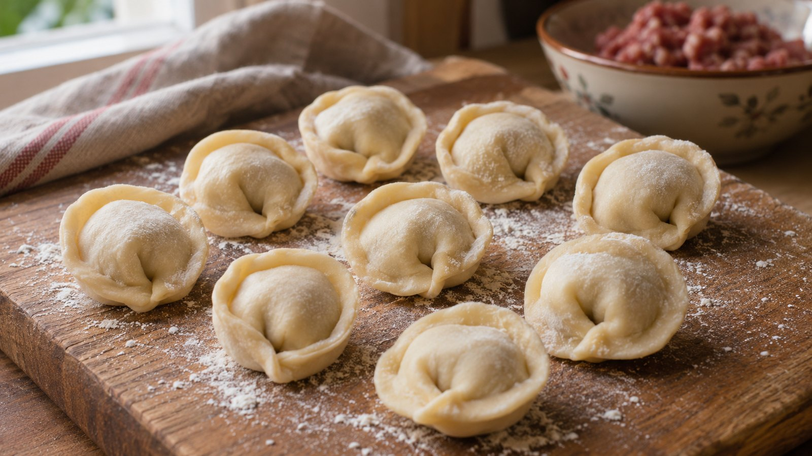

Домашние пельмени: как сделать тонкое тесто, которое не рвётся при варке

Домашние пельмени особенно вкусны, когда оболочка тонкая, а внутри остаётся мясной сок. Досадно, если при варке тесто раскрывается и начинка оказывается отдельно от него.
Чаще всего дело не в каком-то особенном сорте муки. Тесту нужно время после замеса, фаршу достаточно немного холодной воды, а швы стоит соединять без спешки. Всё это можно сделать на обычном кухонном столе.
Продукты на семейный обед
Для теста понадобится около 450 г пшеничной муки, 200 мл воды комнатной температуры, одно яйцо, чайная ложка соли без горки и столовая ложка растительного масла. Муки может уйти немного больше или меньше, поэтому лучше не высыпать всю сразу.
Для начинки возьмите 400–450 г смешанного фарша из говядины и свинины, одну среднюю луковицу, 40–60 мл холодной воды, соль и чёрный перец по вкусу.
Получится четыре-пять порций. Часть можно заморозить.
Тесту нужно полчаса покоя
Размешайте яйцо, воду, соль и масло. Всыпьте большую часть муки и начните собирать тесто ложкой, затем руками. Когда оно станет плотным, переложите на стол и вымешивайте около восьми-десяти минут.
Правильное пельменное тесто не должно литься и липнуть к пальцам, но и забивать его мукой до каменной плотности не стоит. Если оно совсем сухое и не собирается, добавляйте воду буквально по чайной ложке.
Теперь накройте тесто миской или плёнкой и оставьте на 30 минут. За это время мука лучше увлажнится, тесто станет податливее и перестанет так сильно стягиваться при раскатывании.

После отдыха тесто заметно легче раскатывать.
Чтобы начинка не стала сухой
Лук можно мелко нарезать или натереть, чтобы в готовом пельмене не попадались крупные плотные кусочки. Смешайте его с фаршем, посолите, поперчите.
Влейте холодную воду небольшими порциями и хорошо вымешайте. Фарш должен стать вязким и держаться на ложке, а не плавать в жидкости. Для довольно жирного фарша воды иногда нужно меньше.
Не кладите слишком много начинки: толстый шарик мешает соединить края и дольше готовится.
*Удобный ориентир:* на небольшой круг теста достаточно чайной ложки фарша с умеренной горкой. Тогда внутри останется место для сока, а шов получится надёжным.
Тонко, но без прозрачных дырок
Разделите тесто на несколько частей, остальные пока держите под плёнкой. Один кусок раскатайте на слегка присыпанном мукой столе до толщины около 1,5–2 мм.
Вырежьте кружки стаканом диаметром примерно 6–7 см. Если раскатать почти до прозрачности, тесто может повредиться при лепке; если оставить слишком толстым, вкус начинки потеряется за плотной оболочкой.
Положите фарш в центр, сложите кружок пополам, прижмите края от середины к уголкам. На шве не должно быть муки и капель начинки: они мешают тесту склеиться.

Соедините уголки. Форма может быть неровной, главное, чтобы края были закрыты.
Как отправить пельмени в кастрюлю
Возьмите просторную кастрюлю, вскипятите достаточно воды, посолите. Можно добавить лавровый лист и несколько горошин перца. Опускайте пельмени партиями в кипящую воду и осторожно перемешайте сразу, чтобы они не прилипли ко дну.
После повторного закипания убавьте огонь до умеренного кипения. Сильное бурление может повредить швы.
Время зависит от размера и от того, замороженные пельмени или свежие. Для небольших свежих часто требуется около 5–8 минут после всплытия, замороженным может понадобиться больше. Не полагайтесь только на часы и всплытие. Надёжнее проверить температуру начинки пищевым термометром: для фарша из говядины и свинины она должна достичь не менее 71 °C. Разрез одного крупного пельменя помогает оценить результат, но по одному цвету мяса нельзя уверенно судить о безопасности.
Выньте шумовкой, добавьте сливочное масло. Сметану или перец подайте отдельно.
Если часть остаётся на завтра
Сырые пельмени разложите на доске в один слой, чтобы не касались друг друга, и отправьте в морозильник. Когда они затвердеют, пересыпьте в пакет или контейнер. Так не получится один большой замороженный ком.
Не размораживайте их перед варкой: сразу опускайте в кипящую воду, только не перегружайте кастрюлю.
Домашние пельмени не требуют виртуозной лепки. Отдохнувшее тесто, умеренное количество начинки и спокойное кипение делают своё дело. Когда пельмени готовы, их лучше не оставлять надолго в кипятке: аккуратно выньте шумовкой и сразу подавайте. Со временем появится и привычная толщина теста, и свой удобный размер.
Если вам нравятся домашние рецепты с понятными подробностями, оставайтесь с «Красиво жить». А с чем вы чаще подаёте пельмени: с маслом, сметаной или бульоном?